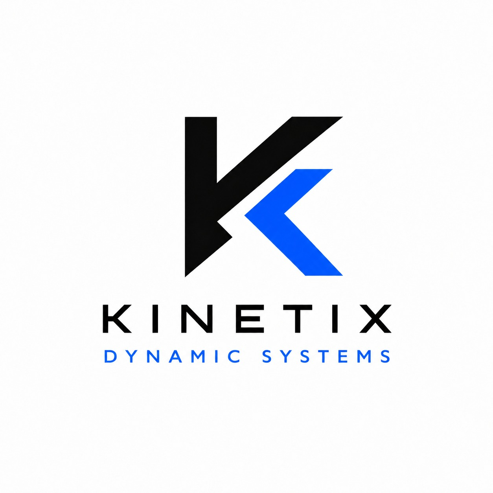

EcoTense, cubierta retráctil inteligente para la concha acústica.
Cómo se presenta: presentación web de 13 diapositivas con navegación por mouse, teclado, táctil y gestos con cámara.
EcoTense es una cubierta retráctil inteligente que protege la concha acústica de la lluvia y el viento: sensores climáticos ordenan el despliegue automático de una membrana de PET reciclado alimentada con energía solar. Sirve para usar el espacio todo el año sin cancelar eventos, cuidando asistentes, equipos e infraestructura.
Medidas de la concha, estudio de lluvias y vientos, requisitos de carga y anclaje.
Estructura retráctil, membrana de PET reciclado, sistema fotovoltaico y planos.
Sensores, actuadores, controlador y lógica manual/automática.
Maqueta y visor 3D, despliegue, estanqueidad y respuesta climática.
Montaje de estructura, membrana, paneles y control en sitio.
Mantenimiento preventivo, monitoreo y capacitación del personal.